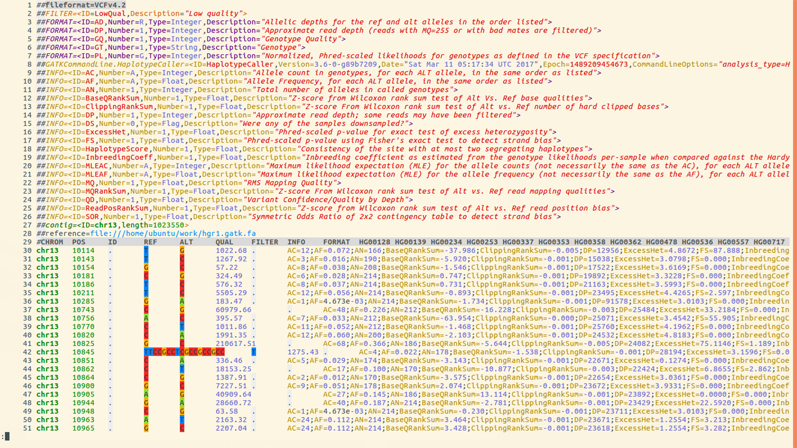
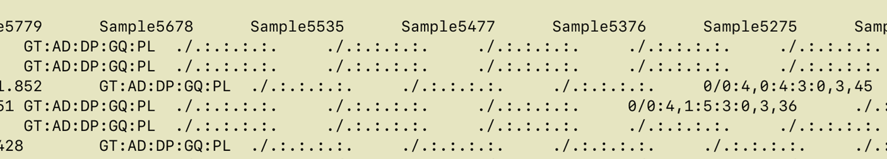
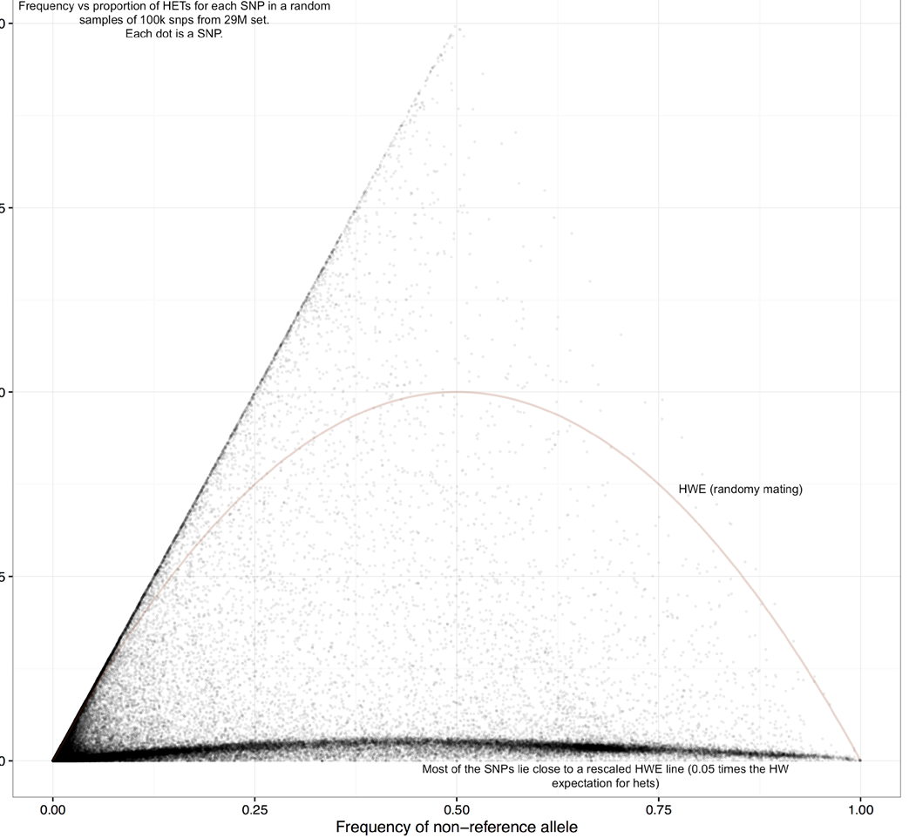

Exploring VCF data
Motivation
- Variant callers output both true and false variants
- Base calling errors, alignment errors, contamination...
- Balance between sensitivity and precision
- The needs of applications may require different preference between precision or sensitivity
- Multi-sample analysis allows to increase the proportion of true positives without sacrificing sensitivity.
- Population genetics principles applicable to your set of samples can further increase the accuracy
VCF File: Structure
- GATK provides various annotations to help users filter the variants
- We will first recall the details of VCF format and then go over the annotations
Here is an example VCF, colored using bioSyntax tool.

Lines 1-29 make up the
Header Section, Lines 30 and below comprise the Data section
- Line 1 shows VCF version
- Line 2 has a single definition of filters (values in the FILTER column). In this example there is only one filter value
PASS - Line 3 to 7 Definition of Genotype information fields
- Line 8the command used to create file
- Line 9 to 26 define
INFOannotations. TheINFOcolumn is usually where all quality related annotations are located. There are quite a few annotations here, we will only use 2 or 3 of these in this presentation - Line 27 lists reference genome contigs names and lengths. In this example there is only one contig. In real rice datasets you will have 12 lines, one for each chromosome
VCF File: Section
VCF file consists of two parts: header and data section.
-
Header Section
The Header contains:
- VCF Version
- Commands used to create file
- Definitions of annotations
- Names and lengths of contigs/chromosomes
- Last line: column names for data matrix
-
Data Section
Each data row contains genotype call data defined by the formatting string located in
FORMATcolumn- Example below:
GT:AD:DP:GQ:PLmeans that each data point consists of 5 values separated by colon(:), namely:: GT: genotype,AD: allele depth… etc.
GT - Genotype (Numerical encoding)
0- reference allele,1- first alt allele,2-second alt allele, etc0/1- unphased ,0|1- phased heterozygote1/1homozygous variant (based on 1st alternate allele)- The format can be different for each variant (different rows may have different strings in the FORMAT column), but consistent across samples (i.e. within the row)
- Example - look at the first non-missing genotype call 
-
GT=0/0(homozygous ref)
AD=4,0(4 reads support REF, 0 reads support ALT
DP=4
GQ=3
PL = 0,3,45(phred-scaled odds , lower is better)
- Example below:
QC Annotations
- Genotype Call Level (for each sample at each variant)
GQ: genotype qualityPL: genotype likelihoodAD: allele depth (number of reads supporting each allele)- See link
for a more detailed explanation of differences between
QUALandGQ - Variant Level
QUALFILTERINFO:DP,QD,AN,AC,AF
QUAL
QUAL is usually defined as: Phred-scaled probability of having no variant at this position
higher QUAL = lower prob of no variant = higher prob of real variant
| QUAL | P(no variant) | -logP |
|---|---|---|
| 10 | 0.1 | 1 |
| 20 | 0.01 | 2 |
| 30 | 0.001 | 3 |
| 40 | 0.0001 | 4 |
Phred scaled means take log10 and multiply by -10:
\(QUAL = (−log P(no variant)) * 10\)
Question: How bad/good is
QUAL=30?
- - In 100,000 variants with QUAL=30, expect 0.001*100,000 = 100 false positives
Read Depth (DP)
- DP within INFO column
(INFO/DP): Read depth of coverage for this position across all samples - DP within each genotype call - read depth for that genotype only example:

FORMAT Sample1 Sample2 Sample3 GT:AD:DP 0/0:12,0 :12 0/1:6,4:10 1/1:0,33:33
Note : DP shows depth AFTER filtering by UG or HC algorithm. It is not the same as BAM read depth.
Quality-by-Depth (QD)
- Quality-by-depth or QUAL-by-depth
- Motivation:
- higher DP leads to higher QUAL
- thus, to assess quality regardless of depth, need to normalise it. Relevant for high coverage data
- QD uses only the reads supporting the ALT allele (so, it’s not simply QUAL/DP)
- For exact definition see GATK documentation
- QD distribution is usually bimodal (smaller QD peak from heterozygous calls, larger QD peak from homozygous alt calls)
- GATK filtering recommendation:
QD > 2
MQ and MQ0
- MQ: Mapping quality
- Defined in VCF header as:
##INFO=(ID=MQ,Number=1,Type=Float,Description="RMS Mapping Quality") - Each read has a mapping quality - confidence that alignment is good
- MQ is an average of mapping quality across all reads supporting the variant
(actual average measure: Root Mean Square) - MQ0: number of reads with mapping quality 0
- Many reads with MQ=0 signify a region that is hard to align - perhaps should not trust
Recommended minimum MQ = 40
Allele Frequency Annotations
AN, AC, AF
AN- Total number of chromosomes with called allele
- Number of non-missing genotypes times ploidy
AC- Number of chromosomes carrying ALT allele in case of several ALT alleles (multiallelic SNP)
- The counts will be separated by comma
“,” AF- Allele Frequency
- Proportion of chromosomes carrying ALT allele =
AC/AN
- These quantities can also be extracted from simpler formats like
HapMapandPLINK - VCF also has some related quantities with prefix MLE (maximum likelihood estimate):
MLEAC,MLEAF. We will not use these.
Filtering on Allele Frequency
- Filtering on allele frequency is perhaps most popular type of filtering. You may see recommendations like
filter all alleles with frequency < 1% or 5% - While this is helpful in most cases, there are some considerations to keep in mind
Base Calling Errors
- Sequencing (base calling) errors are very rare events, and thus are mostly found as singleton SNPs (i.e. appear only in a single sample).
- However, base calling errors will typically appear in only one read covering a position, and GATK tries to detect these.. The variant quality (QUAL and GQ) will typically reflect this and filtering based on GATK annotations should deal with most of these.
- On the other hand, based on population genetics we expect an abundance of singleton SNPs in every diverse sample.( Highest number across all frequency bins).
- With data produced by modern NGS* instruments, most singleton SNPs are actually true SNPs.
- Depending on analysis needed, one may wish to retain even rarest SNPs, after filtering based on GATK annotations only (no allele frequency filtering).
Alignment Errors
- Plant genomes are complicated:
- Ubiquitous repeats
- Traces of ancient WGD (whole genome duplication)
- Divergence in terms of structural variants. Sample genome may have large deletions, insertions, translocations, or inversions, compared to the reference genome
- As a result, read mapping is imperfect. Reads originating from one place in the genome may be mapped to another
- This is most common source of false variants. These come from a real biological signal (correctly sequenced read), but are not positioned correctly
- sometimes can hinder genotyping a true variant (one can have both true and false genotype at the same position)
- The same alignment error can be affecting multiple samples, and the resulting false SNPs may have high allele frequency.
Heterozygosity
- For an inbred species, the expected amount of heterozygotes at a given SNP position is less than for randomly mating population, and is given by a (modified) Hardy-Weinberg formula
Fcan be estimated from genome-wide data. GATK in multi-sample genotyping mode also provides estimates ofF (InbreedingCoef).
\(Expected.prop.of.het. = 2p(1-p)(1-F)\)
where:
F is the inbreeding coefficient
p is the allele frequency
Allele frequency vs heterozygosity in 3K data
Figure 1
- Observe that the distribution is quite far from random mating expectation (red curve)
Y axis: proportion of heterozygous calls
X axis: allele frequency
Figure 2

- Same figure with repeat region SNPs colored blue
- Higher heterozygosity SNPs tend to concentrate in repeat regions
Figure 3

- Same plot with log axis for Y. It is seen more clearly that SNPs in non-repetitive regions are at the small heterozygosity proportion
SNP heterozygosity along genome
Figure 1

- Shown is the beginning of
Chr9 - Highly heterozygous SNPs are clustered (red curve), consistent with their potential origin in duplications
- They are quite ubiquitous, can explain a large proportion of raw SNPs that are filtered
Filtering: based on heterozygosity
- Initial filtering using QD annotation deals with many alignment errors
- If
InbreedingCoefis available, it may be used, otherwise we can estimate it
Filtering: based on Hardy-Weinberg
Question:"Some tools (e.g. PLINK) have a built-in filtering based on testing Hardy-Weinberg expectation. Can we use that filtering when we analyse rice data"?- Short Answer: No
- The built-in HWE test does not account for inbreeding, thus it is inappropriate for rice.
Why the standard Hardy-Weinberg can be inappropriate

Y axis: test statistics (high values result in filtering out)X axis: proportion of het calls- If you use standard HW filtering, you lose a lot of good SNPs. Need to use modified HW filtering
Modified Hardy-Weinberg
- Expected proportion of heterozygous calls under standard HW:
- When there is inbreeding, the expected proportion of hets is given by the following formula
\(Hexp = 2p(1-p)\)
\(Hexp = 2p(1-p)(1-F)\)
F = inbreeding coefficient
F > 0.95 for rice
Take-away
- Variant callers output both true and false variants due to various errors (base calling errors, alignment errors, contamination) and filtering helps to overcome those errors.
- Different analyses may require different filtering procedures. Allele frequency filtering is good for some analyses (GWAS), but could potentially lead to bias in other analysis (divergence)
- Using population genetics principles can help design filtering that fits your data
- For inbred species, filtering based on heterozygosity/inbreeding coefficient is appropriate (and built-in tools based on HW filtering for human data are not appropriate)